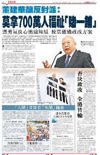

文匯報
董建華籲反對派：莫拿700萬人福祉「賭一鋪」

憑勇氣良心迷途知返 投票通過政改方案
香港文匯報訊（記者 陳庭佳）全國政協副主席、香港特區前特首董建華昨日會見傳媒，發表對特區政府2017年特首普選方案的看法。他強調，在全國人大常委會「8．31」決定下的方案是合憲、合法、合情、合理的真普選，反對派聲稱方案並非「真普選」是誤導市民，而反對派立法會議員若以「捆綁投票」方式否決方案，會令普選特首變得遙遙無期。他呼籲反對派議員拿出胸襟和勇氣，迷途知返，拒絕「捆綁」，憑政治良心投票通過方案，不要拿香港700萬......